The Venue Creator's Guide
- Draft, submitted, published — what actually happens
- The photograph, and the rules that apply to it
- Setting up a peg
- Calibration — the step people skip and regret
- Painting the bed
- Stocking it honestly
- Fish it before you submit it
- What review looks for, and why venues come back
- After it goes live
1. Draft, submitted, published
A venue moves through three states, and knowing them saves a lot of confusion later.
| State | What it means |
|---|---|
| Draft | Yours alone. Nobody else can see it or fish it. You can edit anything, as often as you like. |
| Submitted | Waiting for review. Still private. Left alone until somebody has looked at it. |
| Published | In the shared library. Other anglers can fish it, and catches made there count towards the record boards. |
If a venue is sent back, it comes back to you as a draft with a note saying what needs fixing. That is not a black mark — most first submissions need one small thing. Fix it and submit again.
2. The photograph
Everything else is built on this one image, so it is worth being fussy. The game will take a photograph that is JPEG or PNG, at least 1280 × 720, and under 20MB. That is the technical floor. The useful advice sits above it:
- Shoot from where you would sit. The photograph becomes the view from the peg, so a picture taken standing on the bank at eye level fishes far better than one taken from a bridge or a hill.
- Landscape, and let the water breathe. You need water in the lower half of the frame to have anything to paint, and a visible far bank or horizon to judge distance against.
- Flat light beats bright sun. Heavy glare on the surface hides the features you want to trace.
- Include something you can measure. A far bank, an island, a moored boat, a lily bed — anything whose distance you actually know. Section 4 explains why this matters more than anything else on the page.
The rules that are not negotiable
When you hand over an image, the game asks you to confirm that you own it or have permission to use it, and that it contains nothing unlawful. That is a real declaration, and these are the rules behind it. They are the ones from our Terms of Use, summarised:
- The photograph must be yours, or you must have permission. Not off the internet, not off a fishery's website, not off somebody's social media.
- No identifiable people unless they have agreed. Never a photograph containing a child.
- Crop out private detail — number plates, house names, addresses, signs with phone numbers.
- Respect the fishery. If a water is private, or its owner would not want it recreated and published, do not publish it. The test worth using: would you be happy showing the owner what you have made?
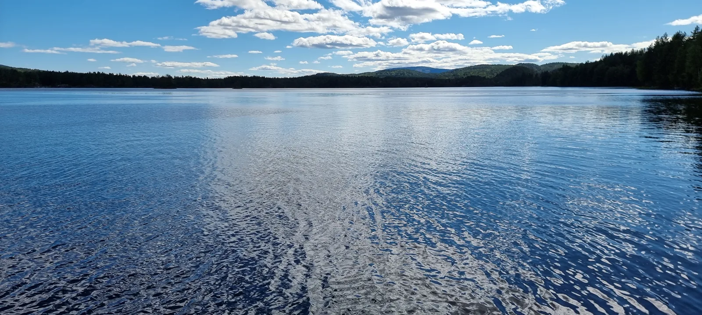
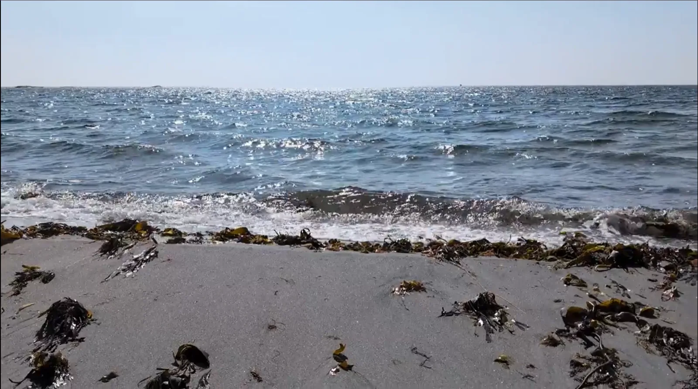
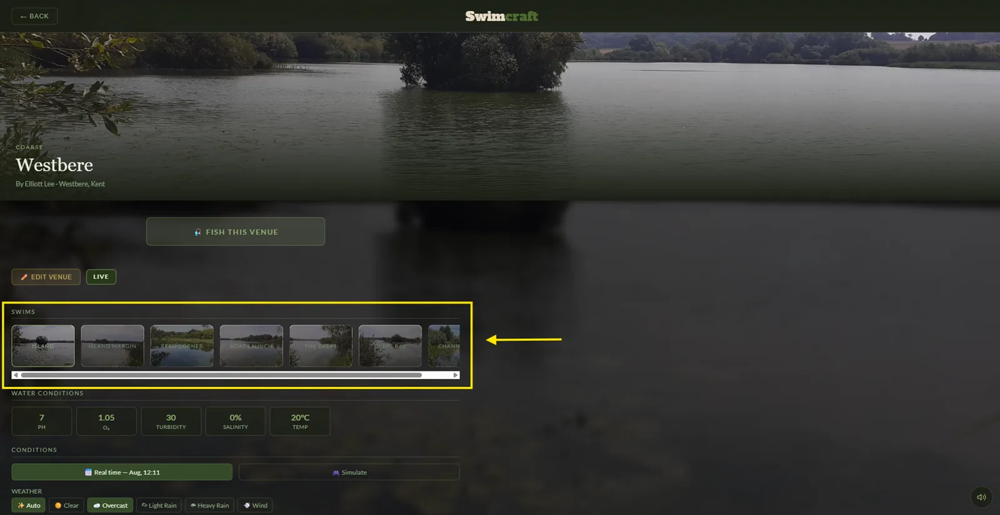
3. Setting up a peg
A venue is one or more pegs, and each peg is one photograph with its own bed, its own features and its own fish. A first venue with one really good peg beats one with four rushed ones, every time.
- Name the venue as an angler would say it. "Leeds Castle Moat", not "my swim 2". Up to 60 characters, and the location line below it takes a town or county.
- Name each peg for where it is — "Gatehouse Peg", "The Point", "Bottom Bend". Up to 40 characters. Those names appear on the record boards under the fish, so they are worth a moment.
- Venue names, peg names, descriptions and fish names are screened before they will save. Keep it clean and it will never come up.
4. Calibration — the step people skip
Calibration is how the game turns a flat picture into real distance. You trace the water's edge, then drop a near pin and a far pin and tell it how far away each one really is.
You cannot move on until every peg is calibrated, and that is deliberate: an uncalibrated peg fishes wrong in a way nobody can see. A cast that should reach an island falls short, or a 40-yard float rod reaches the far bank of a reservoir. The venue looks fine and fishes like nonsense.
How to get it right without a rangefinder
You are not being asked to state a distance from memory. You are being asked to recognise one, which anglers are good at:
- Think in casts. "That island is about two comfortable feeder casts" is roughly 60–70 yards, and that is a far better answer than a number you invented.
- Use what you know. Most commercial lake pegs are 20–40 yards across to the far bank. A big gravel pit or reservoir is hundreds. A canal is 10–15.
- Put the near pin on something close and definite — the margin shelf, a near lily pad, the end of your platform.
- If you genuinely do not know, go and look at the water on a map before you build. It takes a minute.
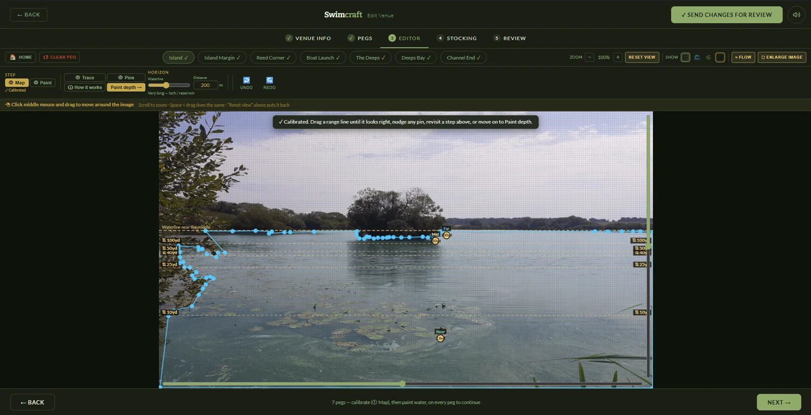
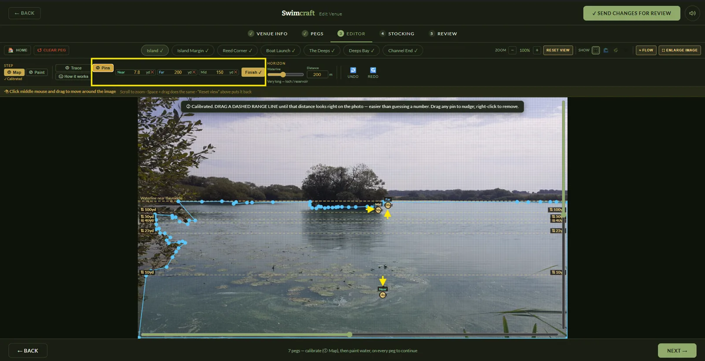
5. Painting the bed
Next you paint what is under the water: depth bands from the margin out, plus features — weed, gravel, silt, snags, reeds. You need at least one square of water painted to continue, but a bed painted properly is what makes a venue feel like a real water rather than a bath.
- Follow the picture. Where the surface goes dark, it is usually deeper. Where you can see the bottom, paint it shallow. A reed line is a shelf.
- Margins shallow, middle deeper is the default shape for most stillwaters — but a gravel pit is lumpy and a canal has a flat boat channel with shallow shelves either side. Build the water you know.
- Features are what anglers hunt for. A bare, evenly-painted bed gives nobody a reason to cast anywhere in particular. Give the peg two or three spots worth finding — a gravel bar, a silt gully, a snag on the far shelf.
- Do not put snags everywhere. They are exciting where a fish might reasonably be lost. Everywhere is just frustrating.
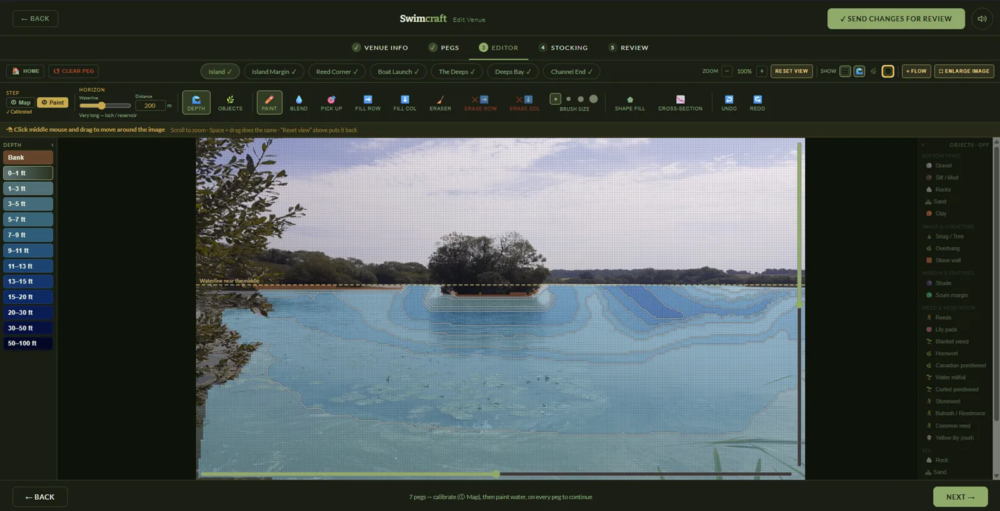
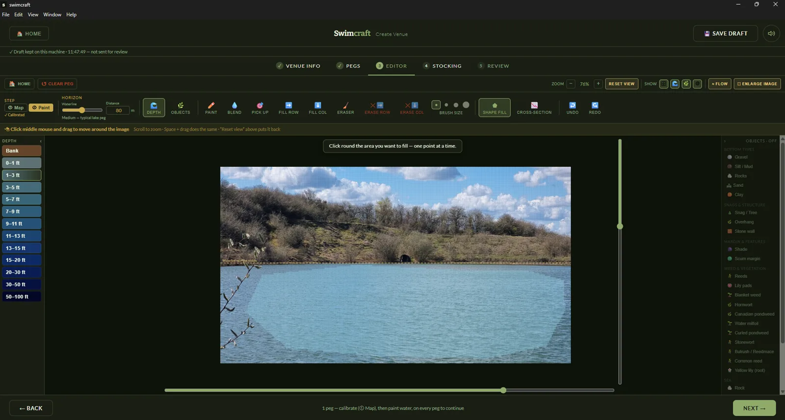
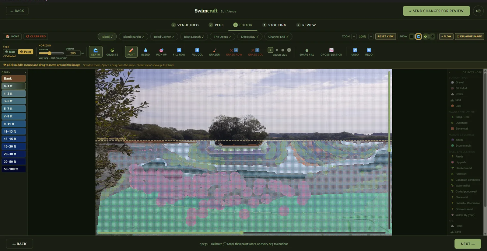
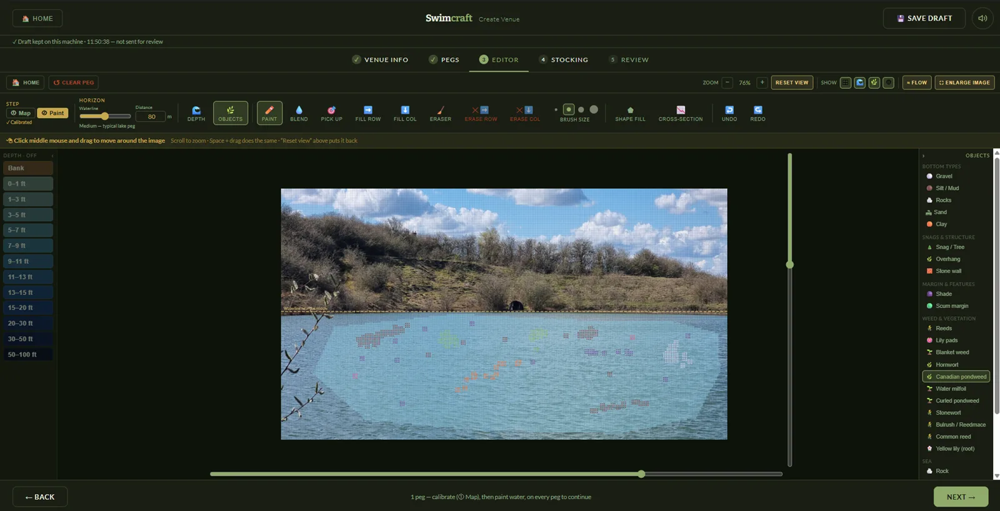
6. Stocking it honestly
Stocking is where a venue is made or ruined, and it is where the game is strictest with you. Three limits apply, and each one exists for a reason.
Capacity — the water can only hold so much fish
Capacity is worked out from the volume of water you painted and the venue's difficulty. A small shallow puddle cannot hold 400lb of carp. Over-stock a peg and it will not save until you take some out or make the venue easier.
Difficulty decides both the stamp and the density
Difficulty is not a slider for how hard you want it to feel, and it does not change how the fish behave. It sets how much stock the water holds and which size bands you may use — nothing else. A hard water fishes hard because there is less in it and what is in it is bigger.
| Difficulty | What it gives you |
|---|---|
| Easy | Densely stocked, frequent bites, small to medium fish. A runs water. |
| Intermediate | About half the stock of Easy. Fewer bites, better average size. |
| Hard | Lightly stocked. Longer waits, and what does bite is bigger — up to Specimen. |
| Specimen | Very lightly stocked, long waits by design. The only setting that allows Big Specimen and Monster. |
If a fish you want is too big for the difficulty you picked, the game tells you the minimum difficulty that would fit it. Raising difficulty is a real trade: you get the big fish, and the water goes quiet.
Nothing beats the national record
Every species is capped at the national record for the country the venue is in. You cannot stock a 90lb common carp in a Kent farm pond, and the editor will not let you try. There is also a soft warning for a fish that is legal but a stretch for the water you have painted — that one does not block you, it just tells you an experienced angler will notice.
Named fish
A named fish is the one people come for. Give it a species, a name and a weight and it goes on the peg; add a photograph of it and it appears on the catch screen when somebody finally banks it. A venue with two or three known residents has a story. A venue with fifteen has none.
The stocking that makes a good water
- Mixed sizes. A water of nothing but doubles is boring, because nothing you catch is a surprise. Small fish are what build a swim up — see the SWIM confidence guide.
- Species that belong together. Roach, bream, tench and carp in a farm pond, yes. Not everything in the list because the list was there.
- Leave headroom. Stocking right up to capacity leaves you no room to add the fish you think of next week.
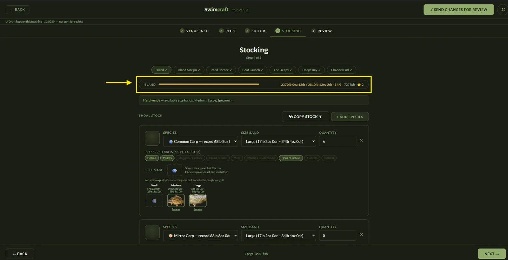
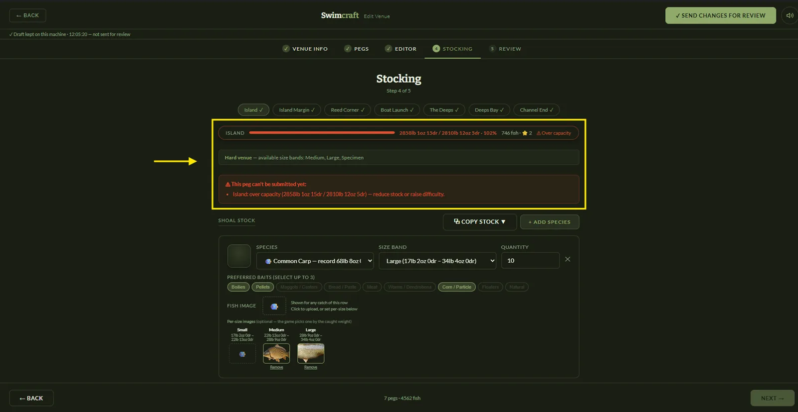
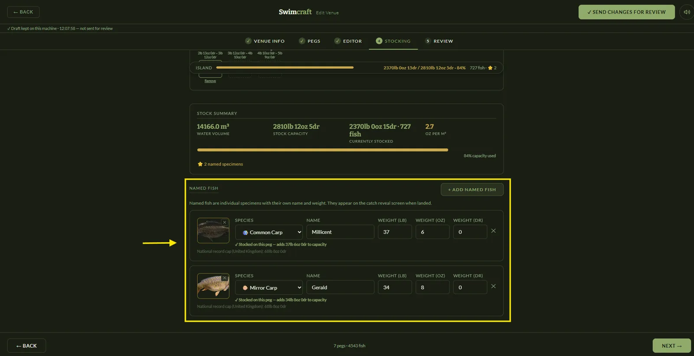
7. Fish it before you submit it
The editor has a test mode, and it is not optional in any practical sense. Ten minutes on your own venue will find things no amount of looking at the map will:
- Can you actually reach the features you painted with a sensible rod? If everything good is out of range, calibration is wrong or the features are too far out.
- Does the depth under the float match what the picture looks like?
- Do you get bites at a rate that fits the difficulty you chose?
- Is there a reason to move? A peg where one spot is obviously right and everywhere else is dead is a peg with one cast in it.
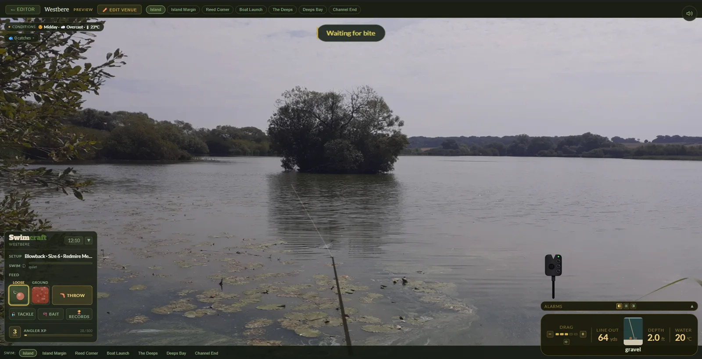
8. What review looks for
Every venue is looked at by a person before it joins the shared library. They are not marking your artwork. They are checking a short list, and it is the same list every time:
| Checked | What sends a venue back |
|---|---|
| The photograph | Not yours, contains identifiable people or a child, shows private detail, or is not really a fishing swim. |
| The words | Venue name, description or fish names that break the community guidelines. |
| Honesty | Stocking or naming that is a joke at the game's expense — a puddle stuffed with record fish, a peg named to game the boards. |
| Playability | No calibration worth the name, an unpainted bed, or a venue that plainly could not be fished. |
| The bed, counted | Fewer than three distinct depth bands on a peg, fewer than two different feature types, or any blank cell in fishable water. These are arithmetic rather than judgement, so they are the easiest to pass and the easiest to trip over. |
What is not checked: whether it is pretty, whether it is like anyone else's, or whether the reviewer would enjoy fishing it. A modest venue built honestly passes. A spectacular one built on somebody else's photograph does not.
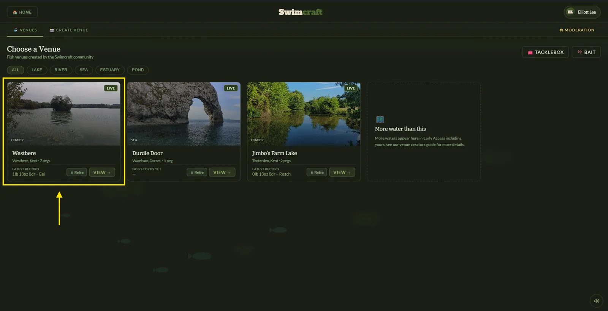
9. After it goes live
- Edits go back through review. Once a venue is published its content is locked, and any change you make is staged and looked at again before it reaches other players. So get it right before you submit rather than planning to patch it.
- You can retire it. Retiring takes a venue out of the library — and its records come off the boards with it — without deleting anything. It is your switch, and it is reversible.
- Records made there carry your venue's name, and the peg's, wherever they appear. That is the reason to name pegs properly at the start.
Questions, or think we got a review decision wrong? info@harbledowndigital.com.